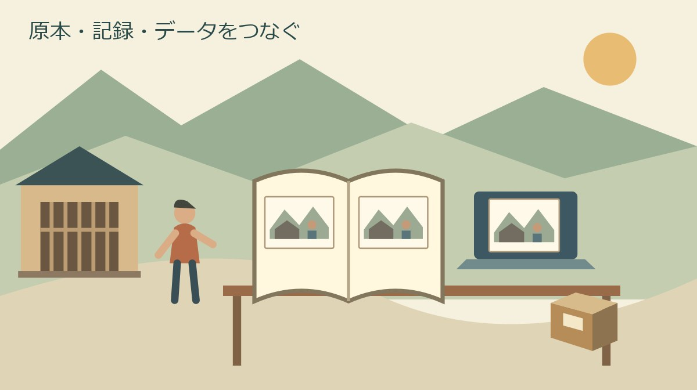
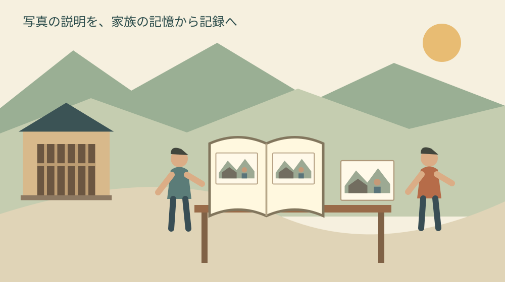
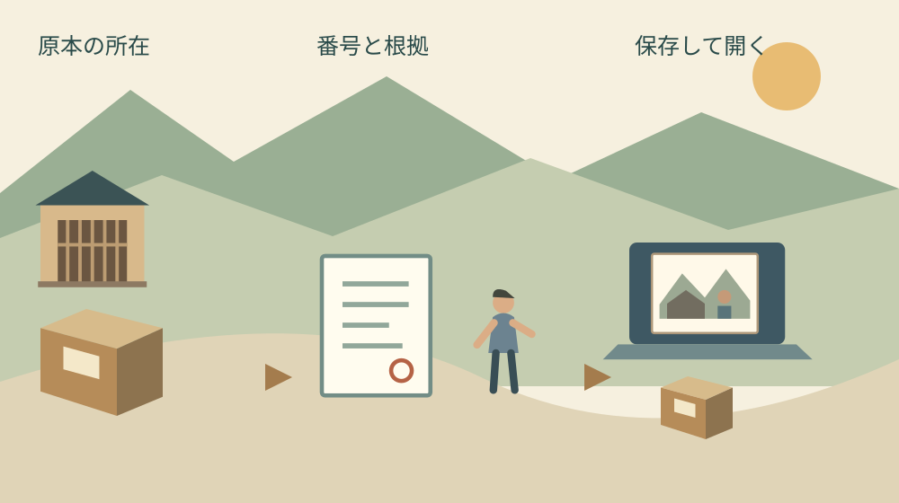

森町の古い家族写真｜原本とデータを残す準備
公開｜水曜日・歴史文化の継承

Q. 古い家族写真は、何から整理して残せばよい？
A. 森町の古い家族写真は、原本を残し、場所・時期・人物と判断の根拠を別紙に記録してからデータ化を進めます。データは保存後に開けるか確かめ、原本の所在と対応付けます。材質や傷みが分からない写真の洗浄・剥離は自己判断で行わず、保存方法を相談してください。
残してきた家族の手間を、次の人へ渡す
森町の実家に残る家族写真には、何度も片付けをしながら捨てずに置いてきた人の手間があります。アルバムをしまう場所を空け、引越しの荷物に加え、湿気を気にしてきた。その負担を認めたうえで、次の家族が維持できる残し方を考えたいと思います。
私は大石浩之（磐田市／不動産業）です。町の外に住み、家を引き継ぐ段取りから地域の記録を考えています。写真の価値を鑑定する記事ではありません。写っている場所・時期・人物の根拠と、原本・データの所在を家族で共有する準備を扱います。
古い写真を全部整理する結論は、今日出さなくても構いません。私が勧める最初の作業は、説明できる写真を一枚選ぶことです。処分する枚数を決める前に、その一枚について分かることを増やす。保存の方法や引継ぎ先は、その材料を見てから考えられます。
帳面や手紙を発見した際の連絡準備は、森町で古文書を見つけた場合の記事で扱っています。本記事は、写真を見つけた後も原本とデータを維持する作業に焦点を絞ります。相談を一度すれば保存が終わる、という話ではありません。
原本の写真は、紙だけでできているとは限らない
国立国会図書館が公開する第34回保存フォーラムの資料「東京都写真美術館における写真の保存」は、写真の構造を説明しています。画像を作る物質、結合剤、支持体の組合せがあり、支持体には紙のほかガラスやフィルムなどもあります。2026年10月28日に原文を確認しました。
同資料は、温湿度の変化、光、残留薬品、取り扱いなどを劣化の要因に挙げています。材質に応じて収蔵環境を分ける美術館の実践も紹介しています。一見同じ大きさの写真でも、同じ保存方法を当てはめられるとは限らない点が、家庭で読む際の手がかりです。
私は、美術館の収蔵庫の温湿度を、そのまま家庭の設定値として紹介しません。材質の特定も設備も違うからです。家庭でまず記録したいのは、どの部屋のどの箱にあり、貼り付き、反り、変色などが見えるかという現状です。原因の名前まで推測で書く必要はありません。
材質が分からない写真を水洗いする、台紙からはがす、薬剤で汚れを落とす、といった作業は自己判断で進めないでください。傷みを直そうとして原本を変えてしまえば、戻せない場合があります。湿りや貼り付きがあるときは、作業を止めて保存修復を扱う専門先への相談方法を確認します。
保管用品を買う前にも、印画紙なのか、フィルムなのか、台紙ごと残す物なのかを整理します。「写真用」という商品名だけで手元の原本に適するとは断定できません。私は、分からない状態で一括購入するより、原本の状態を説明して適合を確かめる方が、費用の無駄を減らせると考えます。
森町の写真を、場所と所蔵の記録から読む
森町公式の図説森町史「33 森地域の戦争体制と人々」には、入営記念写真などが掲載されています。写真には森町教育委員会所蔵写真という表示があります。2026年4月22日更新の本文を10月28日に確認しました。写真の画面だけでなく、何を写し、どこに伝わるかが情報になっています。
私は、この掲載方法を家庭の整理の参考にしたいと思います。家族写真にも、写っている出来事の説明と、今どこに原本があるかの両方を残す。その二つが分かれば、別の家族が似た写真を見つけた際にも、同じ場面かどうかを相談する手がかりになります。
森町公式の「森町文化財保存活用地域計画の認定について」は、文化財全般の保存と活用を扱う計画を案内しています。2026年8月6日更新で、問い合わせ先は社会教育課文化振興係、電話0538-85-1114です。写真の専用保存受付を告知するページではありません。
町史に写真が載っていることや、町に文化財の計画があることから、自宅の写真が寄贈できるとは判断しません。今回確認したページでは、家族写真の受入条件、鑑定の可否、修復サービスの範囲は確認できませんでした。原本を運ぶ前に、相談先と必要な説明を尋ねる段取りを残します。

写る場所・時期・人物は、根拠と一緒に残す
家族写真の説明は、「場所」「時期」「人物」「根拠」を別々の欄にすると読み違いを減らせます。これは私が提案する家庭用の記録方法です。町の指定書式ではありません。写真の裏面の記載、家族から聞いた話、別資料との比較を、同じ確かさの情報として混ぜないようにします。
場所の欄では、家族が呼んでいた地名と、現在の住所を分けます。たとえば「祖父が旧宅と言っていた場所、番地は未確認」という記入も可能です。この文は架空の記入例です。建物の外観が似ているだけで所在地を確定せず、誰の説明によるものかを添えます。
時期の欄は、撮影年とデータ化した年を分けます。2026年にスマートフォンで古い写真を撮れば、保存ファイルには2026年の日時が付くことがあります。その日時を元の撮影年に置き換えないため、「原本撮影年不明・複写日2026年10月28日」のように役割を明記します。
人物の欄は、画面の左から順に仮番号を振る方法を提案します。名前が不明なら「左から二人目、氏名未確認」で止められます。親族の名前が似ている場合は特に、別の人の記憶を聞く前に一人の推測を確定情報として配らない方が、後で訂正しやすくなります。
根拠の欄には「裏面に記載」「家族の説明」「推測」の区別を書きます。聞き取りなら、話を聞いた日と相手を家族用の記録に残します。意見が割れた場合は、正解を急いで一つにせず、二つの説明を併記する。分からないことを消さないのも、記録を引き継ぐ方法です。
町の資料と照合する手順は、森町の歴史を図説と資料館で調べる記事も使えます。町史の年代は比較の材料です。自宅の写真の撮影日を自動的に決める答えではありません。似た橋や建物を見つけたときも、相違点を記録して確かめます。
良い点｜データで見れば原本を動かす回数を減らせる
写真をデータ化する良い点は、原本を毎回取り出さずに、離れた家族と内容を確認できることです。私は、森町の実家に帰れる人だけが説明を担う状態を減らせると考えます。原本を持つ人と人物を覚えている人が違っても、同じ画面を見ながら記録を足せます。
裏面に日付や名前がある場合は、表と裏を組にして残す方法があります。原本を安全に扱える状態であることが前提です。アルバムから無理にはがさなければ裏が見えないなら、「裏面未確認」と書きます。情報を増やすために原本を傷める作業を優先する必要はありません。
一枚ずつの画像に加え、アルバム全体の並びが分かる記録にも意味があります。隣の写真の説明や、ページの書き込みが手がかりになるためです。私は、画像の美しさを整える前に、どのページのどの位置だったかを残す方法を勧めます。写真を移した後も元の関係をたどれます。
複写後は、画面を拡大し、端が欠けていないか、反射で顔や文字が見えないかを確かめます。全部撮り終えてから失敗に気付くと、原本を出す作業が増えます。まず一枚を試し、家族が読みたい部分を見られるかを確認してから、続きの枚数を決める段取りが現実的です。
注文したい点｜保存ボタンを押しても作業は終わらない
国立国会図書館の「よくあるご質問：電子情報の保存」は、画像の長期保存にはファイル形式と記録媒体の双方への注意が要ると説明しています。媒体が読めなくなる前のコピーや、環境の変化への対応も必要です。デジタルにしただけで永久に見られるとは説明していません。
私は、家族向けのデータ化の案内には、作成後の担当と確認日も添えてほしいと思います。枚数や解像度だけでは、誰が次に開くかが残りません。外部へ作業を頼む場合も、納品された画像を確認する人、原本の返却を確認する人を先に決めると、引継ぎが具体的になります。
保存先を二つ作る場合も、同じ場所に置いた二つの機器なら、同じ事故で失う可能性を考える必要があります。私は、家族が無理なく管理できる範囲で、保存場所を分ける方法を提案します。これは被害を必ず防ぐ保証ではなく、一か所だけに依存しないための備えです。
同期機能を使う際には、一方で消した画像が他方でも消える設定かを確認します。画面に二つの保存先が見えることと、独立した複製が残ることは同じではありません。サービス名だけで安心せず、不要なテスト用ファイルで動作を確かめるなど、家族が理解できる範囲を選びます。
私は、どこまで高精細に残すべきかには迷います。大きなデータは後から細部を見やすい一方、保存容量や作業時間を使います。家庭ごとの目的を確かめずに一律の数値を押し付けません。顔を見たいのか、裏の文字を読みたいのかを一枚で試し、必要なら専門業者へ仕様を相談します。

対案・結論｜一枚に番号を付け、原本と記録を結ぶ
今日できる作業は、一枚の写真に家庭内の整理番号を決め、記録票と画像名に同じ番号を付けることです。原本へ直接書くのではなく、対応表で管理します。たとえば「写真001」という仮番号なら、場所や人物が後で訂正されても、原本との対応を保てます。
ファイル名は「写真001_表」「写真001_裏」のように役割を区別します。編集した画像を作る場合は、元の複写データと別の名前で保存します。明るさの調整や色の補正をした物を、加工していない記録だと思われないようにするためです。加工内容も短く記録しておきます。
古い写真を自動で着色したり、欠けた部分を補ったりした画像は、家族が楽しむ材料にはなり得ます。ただし、その色や形が当時の事実だとは限りません。私は、元の画像を残し、加工版には加工した旨を付ける方法を選びます。説明のない加工版だけを次の世代へ渡さないためです。
保存先を作ったら、コピー先から画像を一つ開きます。作業した端末の画面に見えるだけで確認を終えず、引き継ぐ家族も開けるかを確かめます。確認した日を記録し、次に端末を買い替えるときや保管場所を変えるときに、再び開く作業を予定に含めます。
家の引渡しと、写真の引継ぎは別に確認する
実家を片付けたり、建物を引き渡したりする際は、写真の原本を誰が持ち出すかを別に決めます。家財の箱に入れたままでは、写真だけを残したいという希望が作業者へ伝わりません。私は、箱の所在と引取り担当を、家の鍵の引継ぎとは別の欄に書く方法を勧めます。
記録票には、原本の保管者、箱やアルバムの位置、データの保存先、最後に開いた日を残します。公開用の説明とは違い、これは家族内部の管理情報です。詳しい住所や保管位置をSNSへ載せる必要はありません。必要な人だけが記録を見られる範囲を相談します。
クラウド等の継続契約や認証の引継ぎは、実家のデジタル遺品で契約を残す記事に分けて確認できます。写真の説明票へパスワードをまとめて書く方法は勧めません。写真の内容と、サービスへ入るための秘密情報を分けて管理します。
次の担当者が遠方なら、原本を預かる人とデータを点検する人を別にしても構いません。全員が同じ道具を使う前提にせず、紙の記録票も含めて読み返せる形を選びます。引き受ける人の返事を確かめてから、家族の一覧の担当欄を更新する。それが引継ぎの一歩になります。
大石の視点｜残す判断を、今日だけで終わらせない
私はこう考えます。実家の机にアルバムと記録用紙を置くなら、最初に書くのは処分の予定ではなく、一枚の写真について家族が知っていることです。これは実際の相談場面ではなく、私の作業の提案です。写っている家の呼び名、話した人、まだ分からない年。その小さな記録があれば、家を片付けた後でも、家族は写真について考え直せます。保管の結論を急がせるより、次に判断できる状態を残したいと思います。
原本を残すことは、家族に無期限の保管を約束させることではありません。私は、今の担当が維持できる量と場所を見て、次の相談日を決める方法を支持します。担い手が変わるたびに整理をやり直さずに済むよう、今日一枚の番号と所在を残す。それを森町の家の記憶をつなぐ出発点にします。
よくある質問
2026年10月28日に確認した一次資料と、本記事の準備方法から、家族や次の担当者が迷いやすい点を整理します。
データ化したら古い写真の原本を捨ててもよいですか？
データ化できたことだけを理由に、原本の廃棄を決めないでください。裏面の記載や台紙、写真の並びなど、画像だけでは残せていない情報があります。データも媒体や再生環境の変化への対応が要ります。まず原本と画像を整理番号で結び、保存後に開けるかを確認します。保管の負担がある場合は、引継ぎ先や保存の相談方法を家族で検討します。
撮影年や人物が分からない写真はどう記録しますか？
不明な年や人物を推測で確定せず、「撮影年不明」「左から二人目の氏名未確認」などと残します。裏面の記載、家族から聞いた話、資料との比較は根拠を分けて書きます。データ化した日と元の撮影日は別です。説明が食い違った場合も一方を消さず、誰にいつ聞いたかを家族用の記録へ残すと、後の確認につなげられます。
森町に家族写真を寄贈したり鑑定してもらったりできますか？
今回確認した町の公式ページでは、家族写真の寄贈受入条件や鑑定の可否は確認できませんでした。町史に写真が載っていても、自宅の写真が受け入れられるとは限りません。原本を運ぶ前に、文化振興係など町の案内先へ相談方法と担当先を確認してください。写真の概要、状態、保管の事情を整理し、必要な資料を尋ねる準備ができます。
公式情報源
2026年10月確認（確認日：2026年10月28日）。制度・数値・利用条件は変わる場合があります。最新条件は担当先へ、保存修復・権利・税務・登記・相続等の個別判断は専門家へ確認してください。
- 国立国会図書館：よくあるご質問・電子情報の保存（2026年10月28日確認）
- 国立国会図書館・第34回保存フォーラム：東京都写真美術館における写真の保存（2026年10月28日確認）
- 森町・図説森町史：33 森地域の戦争体制と人々（2026年10月28日確認）
- 森町：森町文化財保存活用地域計画の認定について（2026年10月28日確認）